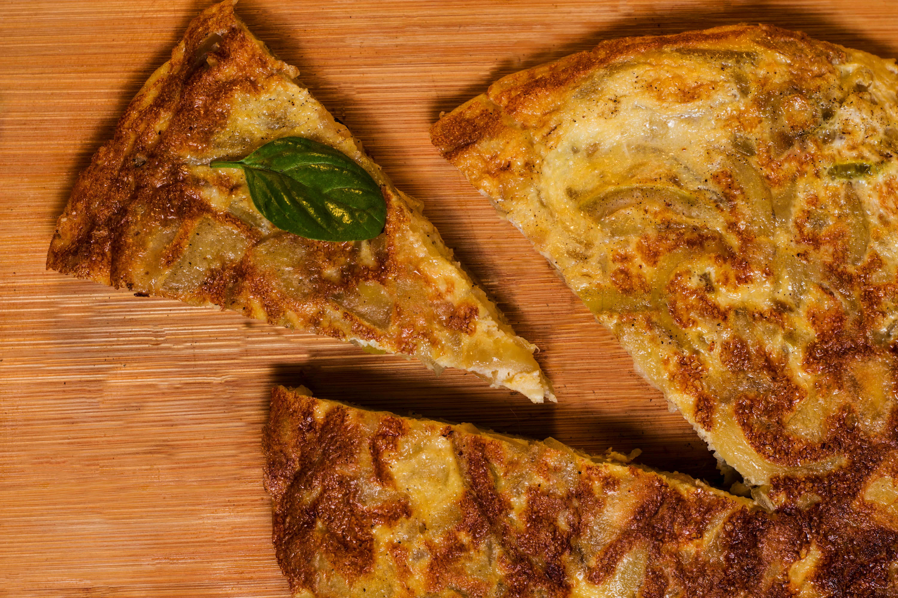

Homepage
Tortilla Española

Description
Tortilla Española (Spanish Omelette) is a hearty Spanish dish made with eggs, potatoes, and onions, cooked into a thick omelette. Served warm or cold, often with bread.
Ingredients
- 275g/10oz small Desirée potatoes
- 3 tbsp olive oil
- 1 onion, about 4oz (110g), thinly sliced
- 5 large free-range eggs
- salt and freshly ground black pepper
Method
- Thinly pare the potatoes using a potato peeler and slice them into thin rounds;
work quickly because you don't want the slices to brown.
- Rub the slices in a clean tea towel to dry them.
- Heat 2 tablespoons of olive oil in the frying pan and, when smoking hot,
add the potatoes and onions.
- Toss them around in the oil to get a good coating,
then turn the heat right down to its lowest setting.
- Add a generous sprinkling of salt and pepper, put a lid on the frying pan and cook gently for 20 minutes,
or until tender.
- Turn them over halfway through and shake the pan from time to time, as they are not supposed to brown very
much but just gently stew in the oil.
- Meanwhile, break the eggs into a large bowl and, using a fork, whisk them lightly
– it's important not to overbeat them.
- Finally, add some seasoning.
- Tip the onions and potatoes into the eggs in the bowl.
- Put the frying pan back on the heat, add the rest of the oil and turn the heat back up to medium.
- Mix the potatoes and eggs thoroughly before pouring them into the frying pan and turning the heat
down to its lowest setting. It's going to take 20–25 minutes to cook slowly, uncovered.
- Every now and then draw the edge in gently with a palette knife to create a lovely rounded edge.
- When there is virtually no liquid egg left on the surface of the omelette, turn it over to cook
the other side. To do this, place a flat lid or plate over the pan, carefully invert both so that
the omelette is on the lid or plate.
- Put the pan back on the heat and use the palette knife to gently ease the omelette back in.
- Give it about 2 minutes more, then turn the heat off and leave it for a further 5 minutes to settle (it
should then be cooked through but still moist in the centre).